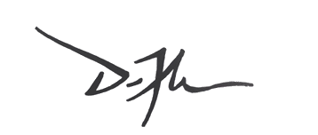

MSPG significa Manual de Supervivencia para Guitarristas. Es un método de cinco libros organizado por cinturones para practicar acordes, escalas y arpegios de forma ordenada hasta llevarlos a la realidad de tocar.
Si te gustó la lógica de práctica del manual, en Patreon puedes conseguir el método completo y seguir avanzando con todo el material de Daniel.